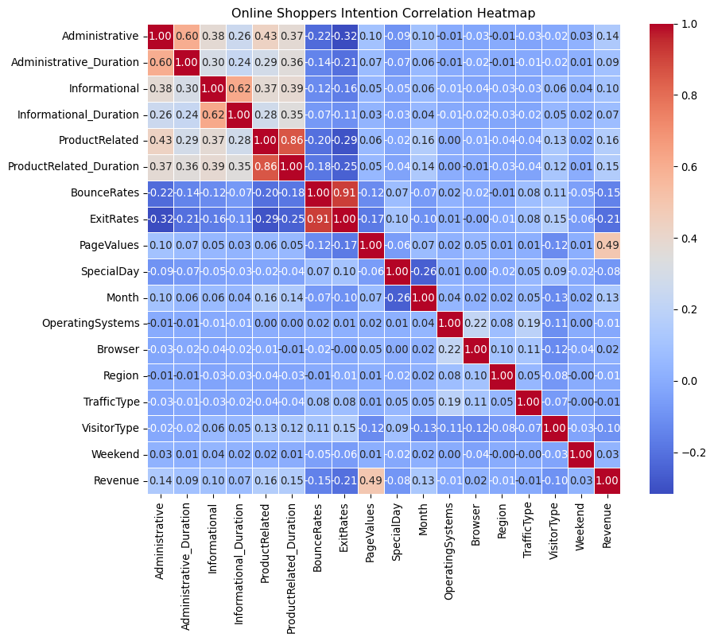
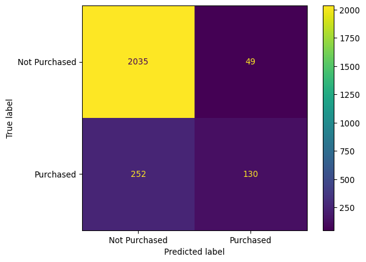
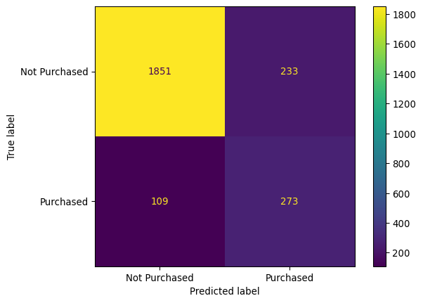

# libraries
import pandas as pd
import numpy as np
import matplotlib as plt
import seaborn as sns
import sklearn
#removes warnings
import warnings
warnings.filterwarnings('ignore')Predicting Online Purchase Behaviour from Website Engagement
DSCI 310, Group 2 Authors: Aidan Aimy, Adrian Chan, Yujia Huang, Renata Lovette
This project investigates whether website engagement metrics can predict whether an online visitor will complete a purchase on an e-commerce website. Specifically, we will examine behavioural indicators such as the number of pages visited, time spent on different types of pages, and engagement metrics such as bounce rate and exit rate.
Using the Online Shoppers Purchasing Intention Dataset, we perform exploratory data analysis and build a classification model to determine whether browsing behaviour can predict whether a visitor will generate revenue for the website.
Understanding these relationships may help businesses better understand online consumer behaviour and optimize website design and marketing strategies.
Introduction
E-commerce platforms collect large amounts of behavioural data about how users interact with websites. Metrics such as the number of pages visited, time spent browsing products, and bounce rates can provide insight into customer engagement and purchase intent. Understanding which behavioural signals are associated with successful purchases can help businesses improve their online shopping experience.
In this project, we analyze user session data from an e-commerce website to investigate whether engagement metrics can predict whether a visitor completes a purchase.
Research Question
Can website engagement metrics (such as page visits, time spent on pages, and bounce rate) predict whether an online visitor will make a purchase?
Dataset
The dataset used in this project is the Online Shoppers Purchasing Intention Dataset from the UCI Machine Learning Repository.
The dataset contains information about user browsing sessions on an e-commerce website. Each row represents a user session and includes both behavioural metrics and contextual information about the visit.
Key behavioural variables include:
- Administrative (number of administrative pages visited)
- Administrative_Duration (time spent on administrative pages)
- Informational (number of informational pages visited)
- Informational_Duration (time spent on informational pages)
- ProductRelated (number of product-related pages visited)
- ProductRelated_Duration (time spent on product-related pages)
- BounceRates (percentage of visitors who leave after viewing one page)
- ExitRates (percentage of exits from a page)
- PageValues (average value of a page before a purchase)
- SpecialDay (proximity to special shopping days)
The dataset also includes categorical variables such as month, operating system, browser type, region, traffic source, visitor type, and whether the session occurred on a weekend.
The target variable for this project is Revenue, which indicates whether a visitor completed a purchase during the session.
Methods
Data Loading
In this section, we load the dataset and inspect its structure.
# load dataset
df = pd.read_csv('/app/data/online_shoppers_data.csv')
print("Original shape:", df.shape)Original shape: (12330, 18)Data Cleaning and Preparation
Before performing analysis, the dataset may require preprocessing steps such as:
- Checking for missing values
- Converting categorical variables to appropriate formats
- Preparing features for modeling
# Check for missing values
missing_values = df.isnull().sum()
print("Missing values:\n", missing_values)
# Drop rows with missing values
df_cleaned = df.dropna()
print("Shape after dropping missing values:", df_cleaned.shape)
# Remove duplicates
df_cleaned = df_cleaned.drop_duplicates()
print("Shape after dropping duplicates:", df_cleaned.shape)
#There is no missing values or duplicates in the dataset, so the shape remains unchanged.
# Check data types
print("\nData types:")
print(df.dtypes)Missing values:
Administrative 0
Administrative_Duration 0
Informational 0
Informational_Duration 0
ProductRelated 0
ProductRelated_Duration 0
BounceRates 0
ExitRates 0
PageValues 0
SpecialDay 0
Month 0
OperatingSystems 0
Browser 0
Region 0
TrafficType 0
VisitorType 0
Weekend 0
Revenue 0
dtype: int64
Shape after dropping missing values: (12330, 18)
Shape after dropping duplicates: (12205, 18)
Data types:
Administrative int64
Administrative_Duration float64
Informational int64
Informational_Duration float64
ProductRelated int64
ProductRelated_Duration float64
BounceRates float64
ExitRates float64
PageValues float64
SpecialDay float64
Month object
OperatingSystems int64
Browser int64
Region int64
TrafficType int64
VisitorType object
Weekend bool
Revenue bool
dtype: object# column names
print(df.columns)Index(['Administrative', 'Administrative_Duration', 'Informational',
'Informational_Duration', 'ProductRelated', 'ProductRelated_Duration',
'BounceRates', 'ExitRates', 'PageValues', 'SpecialDay', 'Month',
'OperatingSystems', 'Browser', 'Region', 'TrafficType', 'VisitorType',
'Weekend', 'Revenue'],
dtype='object')# Convert categorical data to numeric
import pandas as pd
# Convert VisitorType to numeric
visitor_map = {
"Returning_Visitor": 2,
"New_Visitor": 1,
"Other": 0
}
df["VisitorType"] = df["VisitorType"].map(visitor_map)
# Convert Month to numeric
month_map = {
"Jan":1, "Feb":2, "Mar":3, "Apr":4,
"May":5, "June":6, "Jul":7, "Aug":8,
"Sep":9, "Oct":10, "Nov":11, "Dec":12
}
df["Month"] = df["Month"].map(month_map)
# Check result
print("\nData types:")
print(df.dtypes)
Data types:
Administrative int64
Administrative_Duration float64
Informational int64
Informational_Duration float64
ProductRelated int64
ProductRelated_Duration float64
BounceRates float64
ExitRates float64
PageValues float64
SpecialDay float64
Month int64
OperatingSystems int64
Browser int64
Region int64
TrafficType int64
VisitorType int64
Weekend bool
Revenue bool
dtype: object# Check for impossible values
# Check that count variables are not negative
count_cols = [
"Administrative",
"Informational",
"ProductRelated"
]
for col in count_cols:
if (df[col] < 0).any():
print(f"Warning: {col} contains negative values")
# Check that duration variables are not negative
duration_cols = [
"Administrative_Duration",
"Informational_Duration",
"ProductRelated_Duration"
]
for col in duration_cols:
if (df[col] < 0).any():
print(f"Warning: {col} contains negative values")
# Check rate variables (should be between 0 and 1)
rate_cols = [
"BounceRates",
"ExitRates",
"SpecialDay"
]
for col in rate_cols:
if ((df[col] < 0) | (df[col] > 1)).any():
print(f"Warning: {col} contains values outside [0,1]")
# PageValues should not be negative
if (df["PageValues"] < 0).any():
print("Warning: PageValues contains negative values")
# Binary variables should only be 0 or 1
binary_cols = ["Weekend", "Revenue"]
for col in binary_cols:
if not df[col].isin([0, 1]).all():
print(f"Warning: {col} contains values other than 0 or 1")
print("Impossible value checks complete.")Impossible value checks complete.categorical_cols = [
"Month",
"OperatingSystems",
"Browser",
"Region",
"TrafficType",
"VisitorType"
]
for col in categorical_cols:
print(f"\nUnique values in {col}:")
print(sorted([x.item() for x in df[col].unique()]))
Unique values in Month:
[2, 3, 5, 6, 7, 8, 9, 10, 11, 12]
Unique values in OperatingSystems:
[1, 2, 3, 4, 5, 6, 7, 8]
Unique values in Browser:
[1, 2, 3, 4, 5, 6, 7, 8, 9, 10, 11, 12, 13]
Unique values in Region:
[1, 2, 3, 4, 5, 6, 7, 8, 9]
Unique values in TrafficType:
[1, 2, 3, 4, 5, 6, 7, 8, 9, 10, 11, 12, 13, 14, 15, 16, 17, 18, 19, 20]
Unique values in VisitorType:
[0, 1, 2]# Save cleaned data
df.to_csv('/app/data/shopping_data_cleaned.csv', index=False)
print("\nCleaned dataset saved.")
print("Final shape:", df.shape)
Cleaned dataset saved.
Final shape: (12330, 18)Exploratory Data Analysis
Exploratory data analysis (EDA) helps us understand the distribution of variables and potential relationships between website engagement metrics and purchasing behaviour.
In this section, we will generate summary statistics and visualizations to explore different features of the dataset to understand the differences between sessions that resulted in purchases and those that did not. This section will focus on the following:
- Distribution of
Revenue - Distribution of page visits (
Administrative,Informational,ProductRelated) - Time spent on different types of pages (
Administrative_Duration,Informational_Duration,ProductRelated_Duration) BounceRatesandExitRates
df.head()| Administrative | Administrative_Duration | Informational | Informational_Duration | ProductRelated | ProductRelated_Duration | BounceRates | ExitRates | PageValues | SpecialDay | Month | OperatingSystems | Browser | Region | TrafficType | VisitorType | Weekend | Revenue | |
|---|---|---|---|---|---|---|---|---|---|---|---|---|---|---|---|---|---|---|
| 0 | 0 | 0.0 | 0 | 0.0 | 1 | 0.000000 | 0.20 | 0.20 | 0.0 | 0.0 | 2 | 1 | 1 | 1 | 1 | 2 | False | False |
| 1 | 0 | 0.0 | 0 | 0.0 | 2 | 64.000000 | 0.00 | 0.10 | 0.0 | 0.0 | 2 | 2 | 2 | 1 | 2 | 2 | False | False |
| 2 | 0 | 0.0 | 0 | 0.0 | 1 | 0.000000 | 0.20 | 0.20 | 0.0 | 0.0 | 2 | 4 | 1 | 9 | 3 | 2 | False | False |
| 3 | 0 | 0.0 | 0 | 0.0 | 2 | 2.666667 | 0.05 | 0.14 | 0.0 | 0.0 | 2 | 3 | 2 | 2 | 4 | 2 | False | False |
| 4 | 0 | 0.0 | 0 | 0.0 | 10 | 627.500000 | 0.02 | 0.05 | 0.0 | 0.0 | 2 | 3 | 3 | 1 | 4 | 2 | True | False |
Revenue
How many visits resulted in a purchase? Do returning or new customers make more purchases?
# count of page visits per page type
rev_count = df['Revenue'].value_counts()
rev_countRevenue
False 10422
True 1908
Name: count, dtype: int64# revenue distribution among different customer types
rev_count_customer = df.groupby('VisitorType')['Revenue'].value_counts()
rev_count_customerVisitorType Revenue
0 False 69
True 16
1 False 1272
True 422
2 False 9081
True 1470
Name: count, dtype: int64Comparing Page Visits
Which pages have the most traction? Is there a difference in page visits that result in revenue and the ones that don’t? Are there behavioural differences between returning and new customers?
# Page visits vs Revenue
page_columns = ['Administrative', 'Administrative_Duration', 'Informational', 'Informational_Duration',
'ProductRelated', 'ProductRelated_Duration']
visits_vs_revenue = df.groupby('Revenue')[page_columns].mean()
visits_vs_revenue| Administrative | Administrative_Duration | Informational | Informational_Duration | ProductRelated | ProductRelated_Duration | |
|---|---|---|---|---|---|---|
| Revenue | ||||||
| False | 2.117732 | 73.740111 | 0.451833 | 30.236237 | 28.714642 | 1069.987809 |
| True | 3.393606 | 119.483244 | 0.786164 | 57.611427 | 48.210168 | 1876.209615 |
# Page visits vs customer type
visits_vs_customer = df.groupby('VisitorType')[page_columns].mean()
visits_vs_customer| Administrative | Administrative_Duration | Informational | Informational_Duration | ProductRelated | ProductRelated_Duration | |
|---|---|---|---|---|---|---|
| VisitorType | ||||||
| 0 | 1.470588 | 62.695588 | 0.176471 | 11.685490 | 12.470588 | 570.404862 |
| 1 | 2.551948 | 91.911315 | 0.333530 | 19.237472 | 18.054900 | 636.393354 |
| 2 | 2.283954 | 79.183639 | 0.533504 | 37.101992 | 34.082457 | 1289.421490 |
Correlation Map of features
feature_correlation = df.corr()
plt.pyplot.figure(figsize=(10, 8))
sns.heatmap(feature_correlation, annot=True, cmap="coolwarm", fmt=".2f", linewidths=0.5)
plt.pyplot.title("Online Shoppers Intention Correlation Heatmap")
plt.pyplot.show()
Classification Model
Because the target variable Revenue indicates whether a purchase occurred (True or False), this problem is formulated as a binary classification problem.
We will train a logistic regression model using website engagement metrics to predict whether a visitor completes a purchase. We chose a logistic regression model because it is well suited for a binary classification problem. We begin by splitting the dataset into training and testing data using an 80/20 ratio. Then we standardized our data using StandardScaler() to prevent variables of greater magnitude from having a disproportionate influence on the model before fitting it the LogisticRegression model from the Scikit-Learn library.
from sklearn.model_selection import train_test_split
from sklearn.linear_model import LogisticRegression
from sklearn.preprocessing import StandardScaler
X = df.drop('Revenue', axis=1)
y = df['Revenue']
X_train, X_test, y_train, y_test = train_test_split(
X, y, test_size=0.2, random_state=42, stratify=y
)
scaler = StandardScaler()
X_train_scaled = scaler.fit_transform(X_train)
X_test_scaled = scaler.transform(X_test)
model = LogisticRegression(max_iter=1000, random_state=42)
model.fit(X_train_scaled, y_train)LogisticRegression(max_iter=1000, random_state=42)In a Jupyter environment, please rerun this cell to show the HTML representation or trust the notebook.
On GitHub, the HTML representation is unable to render, please try loading this page with nbviewer.org.
Parameters
Model Evaluation
To evaluate the performance of the classification model, we will use metrics such as:
- Accuracy
- Confusion matrix
These metrics will help assess how well the model predicts purchasing behaviour.
from sklearn.metrics import confusion_matrix, ConfusionMatrixDisplay
score = model.score(X_test_scaled, y_test)
y_pred = model.predict(X_test_scaled)
print(f"The overall accuracy score of our logistic regression model is approximately {round(score, 3)}")
cm = confusion_matrix(y_test, y_pred)
disp = ConfusionMatrixDisplay(confusion_matrix=cm, display_labels=["Not Purchased", "Purchased"])
disp.plot()
plt.pyplot.show()The overall accuracy score of our logistic regression model is approximately 0.878
Class Weighting Model
One limitation of the initial logistic regression model is that the dataset is imbalanced: the number of sessions that did not result in a purchase is much larger than the number of sessions that did. As a result, the model tends to predict the majority class (“No Purchase”) more often, which leads to a high overall accuracy but relatively low recall for the purchase class. In other words, the model fails to correctly identify many visitors who actually complete a purchase.
To address this issue, we implemented class weighting in the logistic regression model by setting class_weight="balanced". This approach automatically adjusts the importance of each class during model training. Misclassifying the minority class (purchasers) is penalized more heavily than misclassifying the majority class (non-purchasers). As a result, the model is encouraged to pay greater attention to patterns associated with purchase behaviour.
weighted_model = LogisticRegression(
max_iter=1000,
random_state=42,
class_weight='balanced'
)
weighted_model.fit(X_train_scaled, y_train)LogisticRegression(class_weight='balanced', max_iter=1000, random_state=42)In a Jupyter environment, please rerun this cell to show the HTML representation or trust the notebook.
On GitHub, the HTML representation is unable to render, please try loading this page with nbviewer.org.
Parameters
Model Evaluation for Class Weighting Model
To evaluate the performance of the re-weighted classification model, we will use the same metrics as before:
- Accuracy
- Confusion matrix
These metrics will help assess how well the model predicts purchasing behaviour.
from sklearn.metrics import confusion_matrix, ConfusionMatrixDisplay
score = weighted_model.score(X_test_scaled, y_test)
y_pred = weighted_model.predict(X_test_scaled)
print(f"The overall accuracy score of our weighted logistic regression model is approximately {round(score, 3)}")
cm = confusion_matrix(y_test, y_pred)
disp = ConfusionMatrixDisplay(confusion_matrix=cm, display_labels=["Not Purchased", "Purchased"])
disp.plot()
plt.pyplot.show()The overall accuracy score of our weighted logistic regression model is approximately 0.861
Discussion
In this project, we investigated whether website engagement metrics can be used to predict whether an online visitor completes a purchase. We explored patterns in browsing behaviour and used a logistic regression classification model to determine whether behavioural indicators such as page visits, browsing duration, and bounce rates could predict purchasing outcomes.
The initial model achieved an overall accuracy of approximately 0.878 on the test dataset. The confusion matrix shows that the model correctly classified a large majority of non-purchasing visitors (2035 true negatives) while making relatively few false positive predictions (49). This suggests that the model is effective at identifying users who are unlikely to complete a purchase.
However, the model performs less effectively when identifying actual purchasers. Out of 382 visitors who made a purchase, only 130 were correctly classified, while 252 were misclassified as non-purchasers. This corresponds to a relatively low recall for the purchase class. In practical terms, the model tends to be conservative and predicts “Not Purchased” more frequently, which likely reflects the imbalance in the dataset where non-purchasing visitors are much more common.
To address this limitation, we explored the use of class weighting in the logistic regression model by setting class_weight=“balanced”. This approach assigns greater importance to the minority class (purchasers) during training, penalizing the model more heavily when purchasing sessions are misclassified. By reweighting the classes, the model is encouraged to pay greater attention to behavioural patterns associated with purchases, which can help improve recall for the purchase class.
Despite this limitation, the results demonstrate that behavioural engagement metrics contain meaningful predictive information about purchase intent. Features related to browsing activity appear to capture patterns associated with purchasing behaviour, even when using a relatively simple logistic regression model.
Future work could improve predictive performance in several ways. First, more advanced models such as random forests, gradient boosting methods, or neural networks may capture nonlinear relationships between browsing behaviour and purchasing outcomes. Second, techniques for handling class imbalance, such as resampling methods or adjusting classification thresholds—could improve the model’s ability to detect purchasers. Finally, incorporating additional features such as user demographics, marketing channel information, or historical customer behaviour could provide a more comprehensive view of user intent and lead to stronger predictive performance.
References
Carmona, C. J., et al. “Web Usage Mining to Improve the Design of an E-commerce Website: OrOliveSur.com.” Expert Systems With Applications, vol. 39, no. 12, Apr. 2012, pp. 11243–49, doi:10.1016/j.eswa.2012.03.046.
M. A. Awad and I. Khalil, “Prediction of User’s Web-Browsing Behavior: Application of Markov Model,” in IEEE Transactions on Systems, Man, and Cybernetics, Part B (Cybernetics), vol. 42, no. 4, pp. 1131-1142, Aug. 2012, doi: 10.1109/TSMCB.2012.2187441.
Sakar, Cemal Okan et al. “Real-time prediction of online shoppers’ purchasing intention using multilayer perceptron and LSTM recurrent neural networks.” Neural Computing and Applications 31 (2018): 6893 - 6908.
Van Den Poel, Dirk, and Wouter Buckinx. “Predicting Online-purchasing Behaviour.” European Journal of Operational Research, vol. 166, no. 2, July 2004, pp. 557–75, doi:10.1016/j.ejor.2004.04.022.